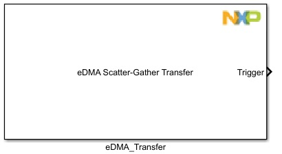
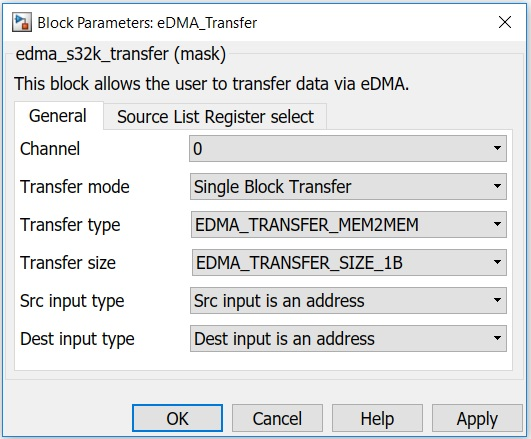
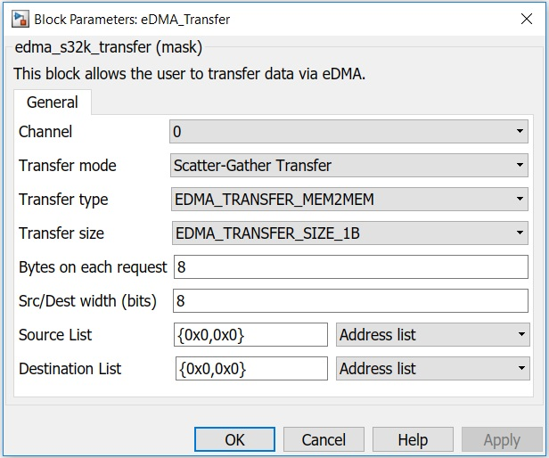
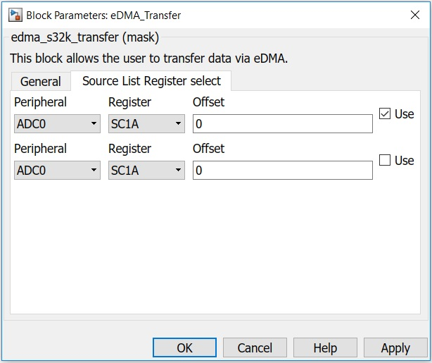

eDMA Transfer Block
This block allows the user to transfer data via eDMA.
You can either use a single block transfer, or a scatter-gather by selecting the apropriate mode from the transfer type list.
Block Image
Inputs:
- Src address - the source address
- Dest address - the destination address
- Buffer size - number of bytes to be transfered in total
Note: Following inputs are for Single block transfer mode.
Outputs:
- Trigger - calls a subsystem at the end of the eDMA transfer.
Note: The subsystem will be triggered only if the transfer ends with success (EDMA_CHN_NORMAL); in case of EDMA_CHN_ERROR there will be no trigger.
Parameters and Dialog Box
The block dialog consists of the following tabs:
- General - for Single block transfer mode
- General - for Scatter Gather transfer mode
- Source/Destination List Register select - for Scatter Gather transfer mode
General (Single block transfer mode)
Channel
Select a DMA channel from the list.
Transfer mode
Select transfer mode between single block transfer and scatter-gather transfer.
Transfer type
Choose what type of transfer you need: memory-to-memory, memory-to-peripheral, etc.
Transfer size
The number of bytes to be transferred on every DMA write/read.
Note:Source/Dest share the same write/read size.
Src input type
Select from the following options:
- Src input is an address - the input of the block represents an address (e.g.: 0x200f400ch)
- Src input is a variable(data) - if you have a value that you want to send to an address (e.g.: you want to transfer 1<<15 to a specific address and you have a constant block that contains the value of 1<<15).
Dest input type
Select from the following options:
- Dest input is an address - the input of the block represents an address (e.g.: 0x200f400ch)
- Dest input is a variable(data) - if you want to transfer from an address to a specific variable (e.g.: data memory store block).
General (Scatter Gather transfer mode)
Channel
Select a DMA channel from the list.
Transfer mode
Select transfer mode between single block transfer and scatter-gather transfer.
Transfer type
Choose what type of transfer you need: memory-to-memory, memory-to-peripheral, etc.
Transfer size
The number of bytes to be transferred on every DMA write/read.
Note:Source/Dest share the same write/read size.
Bytes on each request
Bytes to be transferred in each eDMA request.
Src/Dest width (bits)
The width of the source and destination.
Source/Destination List Register select (Scatter Gather transfer mode)
Peripheral
Select the peripheral from which you want to select a register.
Note: The register list will be updated after selecting a specific peripheral.
Register
Select the register from where/to which you want to transfer data.
Offset
Enter custom offset if needed.
Use
Check it if you want to use the selected register.
Note: if you want to use more than 1, just enable the Use checkbox, and one more group of identical fields will appear in the list.
Block Dependency
Block Miscellaneous Details
- None